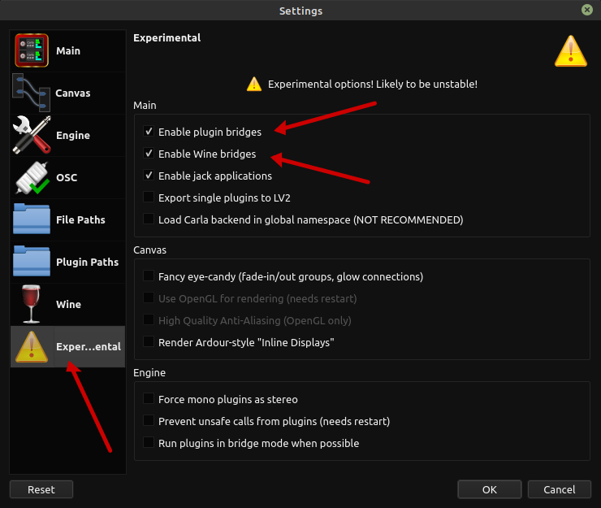
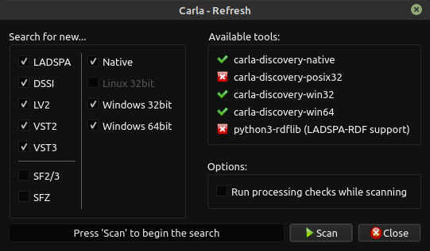
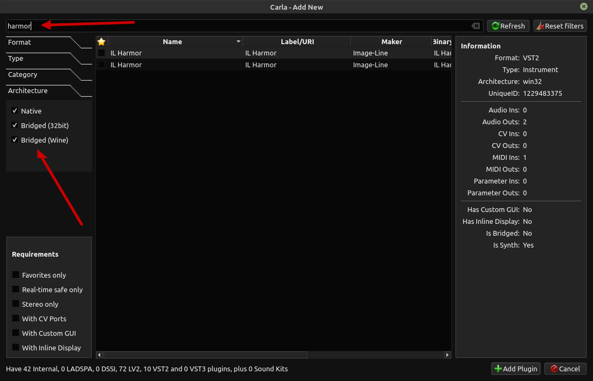
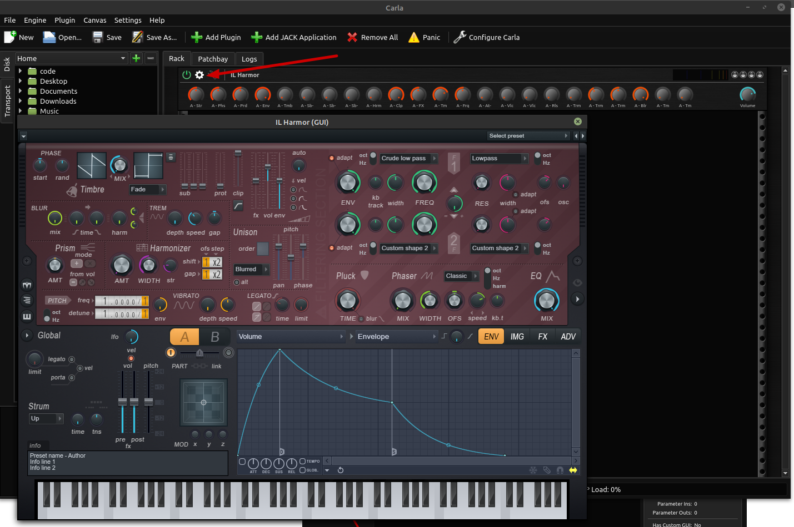

This is a technical review of how I got Windows VSTs working in Linux Mint (and Ubuntu) with Carla.
On Mac and Windows, I've always used live synthesizers. Specifically, I get a lot of use out of Image Line's Harmor synthesizer in FL Studio. I knew that my Harmor license included a VST download, and I also knew that others have had success with getting VSTs working in Linux. I decided to give this a try, and I'm glad I did because it worked with much less effort than I was expecting.
This is the loose set of steps I took to get it all working. Your mileage may vary, etc.
First off I just want to list two resources that helped me the most:
Those links don't have everything I needed, which is why this post exists!
Carla is the thing that hosts your VSTs. It is available from kx.studio but you have to use their repositories to get it - or at least that's how I got it.
You can enable their repository with the following commands (taken from https://kx.studio/Repositories):
# Install required dependencies if needed
sudo apt-get install apt-transport-https gpgv
# Remove legacy repos
sudo dpkg --purge kxstudio-repos-gcc5
# Download package file
wget https://launchpad.net/~kxstudio-debian/+archive/kxstudio/+files/kxstudio-repos_10.0.3_all.deb
# Install it
sudo dpkg -i kxstudio-repos_10.0.3_all.deb
Then update your system and install Carla:
# do not forget this!
sudo apt update
sudo apt install carla-git
Carla will scan your system for plugins, but in order for it to find VSTs you need to install a couple of apps:
sudo apt install carla-bridge-win32 carla-bridge-win64
The bridges will not work unless you enable Carla's "Experimental Features". Start Carla, then go into its configuration screen and choose to enable the experimental features. You'll get a new "Experimental" tab where you need to check the "Enable Plugin Bridges" and "Enable Wine Bridges" checkboxes:

This step might be optional if you already have a .vst file. In my case, my VST is installed from a Windows .exe, so I needed to install Wine:
sudo apt install wine64
# also had to install wine32-development
sudo apt install wine32-development
After downloading the Harmor installer, install it with Wine:
wine64 harmor_install.exe
A Windows GUI will pop up for your installer. You can install it however you want, but just clicking "Next" through everything should be fine. Just take note of where your VST's .dll files are being copied to. There will be a lot of errors in the console, but you can ignore them.
Finally, Carla will look for VST's in your `~/.vst` folder, so you might want to copy the newly installed VST to that location. Create `~/.vst` if it doesn't exist, locate your VST .dll in your Wine path, which is located under `~/.wine`, and then copy the .dll to `~/.vst`. You can also optionally tell Carla to look for other plugin paths.
My VST rendered itself without any text in its menus or GUI because I didn't have any fonts installed in Wine. I installed the fonts using `winetricks`:
sudo apt install winetricks
Then run it:
winetricks
This launches the Winetricks GUI, which is extremely awkward. Navigate through it until you find the option to install a font, and choose the `corefonts` font. When you execute this, Winetricks will pop up a ton of what look like modal error messages, but this is OK - just click OK on each of them, and all the fonts will be installed.
At this point you can finally scan for the VST in Carla and add it to the Carla rack.
Run Carla, then choose Add Plugin, then click the Refresh button. You'll now see a new window that looks like this:

Make sure that those "Windows 32bit" and "Windows 64bit" checkboxes are checked, then click "Scan". It should find your VST.
On the Add Plugin screen, make sure that the "Bridged (Wine)" checkbox is checked under the Architecture section. Then you can search for your plugin name at the top:

Now your VST should be added. Click the gear icon in the rack to bring up your VST's GUI:
